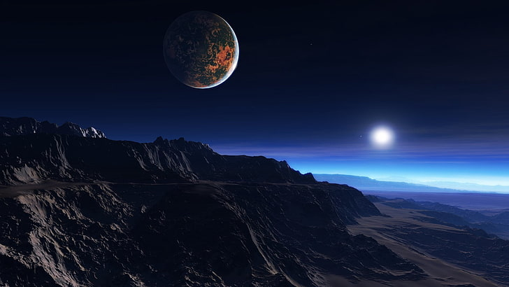

Exploring Exoplanets
An exoplanet, short for "extrasolar planet," is a planet located outside our solar system that orbits a star other than the Sun. These planets are distant worlds that exist beyond the boundaries of our sun's gravitational influence. The discovery and study of exoplanets have become a thriving field in astronomy, significantly expanding our understanding of the cosmos.
The first evidence of a possible exoplanet, orbiting Van Maanen 2, was noted in 1917, but was not recognized as such. The astronomer Walter Sydney Adams, who later became director of the Mount Wilson Observatory, produced a spectrum of the star using Mount Wilson's 60-inch telescope. He interpreted the spectrum to be of an F-type main-sequence star, but it is now thought that such a spectrum could be caused by the residue of a nearby exoplanet that had been pulverized by the gravity of the star, the resulting dust then falling onto the star.
- Exoplanets come in a wide range of sizes, compositions, and orbits. They can be categorized as rocky, gas giants, or ice giants, similar to the planets in our solar system. Some are located close to their host stars (hot Jupiters), while others orbit in habitable zones where conditions may allow liquid water to exist.
- The concept of habitability is crucial in exoplanet studies. Scientists look for planets within the "habitable zone" or "Goldilocks zone" around a star, where conditions are just right for liquid water to exist—a key ingredient for life as we know it.
- The Kepler Space Telescope, launched by NASA in 2009, played a pivotal role in the discovery of thousands of exoplanets using the transit method. The Transiting Exoplanet Survey Satellite (TESS), launched in 2018, continues this mission, focusing on nearby, bright stars to find additional exoplanets.
- Ongoing research efforts continue to expand our knowledge of exoplanets. Future missions, such as the James Webb Space Telescope (JWST), are anticipated to provide even more detailed information about the atmospheres of exoplanets.
- Studying the atmospheres of exoplanets is a key aspect of determining their composition and potential habitability. Techniques like spectroscopy help analyze the light passing through or emitted by exoplanet atmospheres.
- Citizen scientists play a role in exoplanet discovery through projects like Exoplanet Explorers, where the public can contribute to the analysis of data and identification of potential exoplanetary candidates.